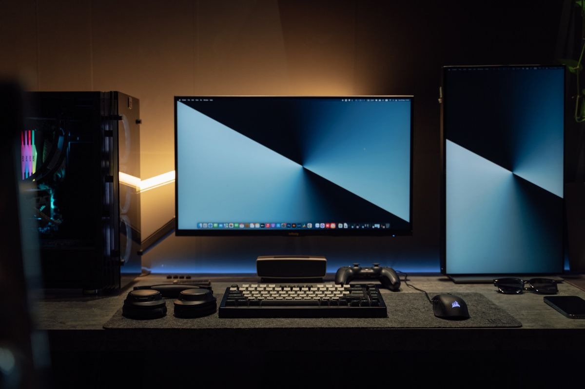

Two PCs.
One setup.
Your favorite keyboard, mouse, headphones and microphone. Shared between two Windows PCs, right over your local network.
Mic driver included. Its one-time setup needs Windows approval and a restart.

A connection you
can explain in a minute.
Download. Pair. Move your mouse.
No account to create, and no cables to swap.
- 01 DOWNLOAD
One app.
On both PCs.Open the same Windows app on each computer. Connect them to the same trusted router—Wi-Fi, Ethernet, or one of each.
DeviceBridge-0.7.0.exeOne file. Ready to open.✓ - 02 PAIR
Six characters.
That’s your key.Choose the PC with your favorite devices. Copy its key to the other PC and click Connect & allow.
EXAMPLE CONNECTION KEYK7M4Q2 - 03 MAKE IT YOURS
Pick a side.
Keep moving.Tell the app where the other screen sits. Move your mouse across that edge; your keyboard follows. Sound and the desk mic start after pairing.
DESK PCOTHER PC
Put the other PC
where it belongs.
Left, right, above or below. Choose your screen position once, then move between PCs with your mouse. No switch button required.
Move past the right edge to use the other PC.
An illustration, not a live connection. Set your actual layout inside DeviceBridge.

Close the window.
Keep your flow.
Minimize it, maximize it, or tuck it into the system tray. Sharing stays active while you get on with your day.
- Open the app again to restore your session
- Live levels show what your microphone is sending
- Disconnect whenever you choose
Ctrl + Alt + EscEmergency stop
Ready for
your two PCs.
One download for everything in the app.
Install the included microphone driver only if you need it.
- Audio capture on PCs with virtual outputs
- Microphone selection and live audio levels
- Close-to-tray and background sharing
DeviceBridge-0.7.0.exe
Windows 10 / 11, 64-bit · 68 MB · One file
Mic setup needs approval and a restart.
71 local regression checks passed. Keyboard, mouse, speaker and microphone operation has been reported working on a Wi-Fi/Ethernet PC pair. This remains a preview.
Clear answers.
Less guesswork.
A few things to know about setting up your shared desk.
Open the two-PC test guideDo I need to download anything else?
No separate runtime or driver download. Open the same versioned .exe on both PCs. VB-CABLE is included for microphone sharing: install it once on the other PC, approve Windows access and restart. If it is already installed and working, keep it.
Can one PC use Ethernet and the other Wi-Fi?
Yes. Both PCs need to be on the same trusted local network. Guest networks and router isolation can block communication. If pairing needs help, use “Fix connection / network access” beside the key. No router port forwarding is needed.
How do I use the shared microphone in calls?
The desk microphone starts after pairing, with a switch to turn it off and a selector for the correct physical mic. On the other PC, choose CABLE Output as your calling app’s microphone. The level meters help you check the signal.
What happens when I close the window?
An active or waiting session continues in the system tray. Reopen DeviceBridge or double-click its tray icon to restore the window. Choose “Disconnect and quit” from the tray menu when you want to exit. Ctrl+Alt+Esc stops sharing immediately.
Will Windows show a publisher warning?
This preview is unsigned, so Windows may show an unknown-publisher or SmartScreen warning. Verified release signing is still pending. Installing the included microphone driver also needs administrator approval.
Which Windows PCs are supported?
The download is for Windows 10 and 11, 64-bit, with one connected PC pair. Audio capture without a physical playback device needs Windows build 20348 or later, including Windows 11. Older Windows uses a physical playback endpoint. Secure Windows screens and elevated apps cannot be controlled.
Does sharing use a cloud server?
Input and audio travel directly between your paired PCs over an encrypted local-network connection. No account is needed. DeviceBridge does not save your typed text or audio recordings. Keep your connection key private.